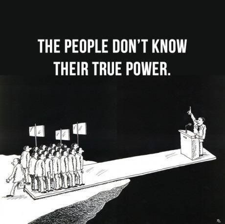

ახალი ალბომი მსოფლიოს ცნობილ როკ ბენდს
მსოფლიოს ცნობილი როკ ჯგუფი ახალი, სხვებისგან საკმაოდ განსხვავებული ალბომით წელს ფესტივალებზე გამოვა.
მუსიკა, ფილმები და პოლიტიკა
დღეს ძალიან აქტუალური თემებია მუსიკა, პოლიტიკა და კინო.
მსოფლიოს ცნობილი როკ ჯგუფი ახალი, სხვებისგან საკმაოდ განსხვავებული ალბომით წელს ფესტივალებზე გამოვა.
ორმა დიდმა პარტიამ მნიშვნელოვანი შეთანხმება განახორციელა ქვეყნის სტაბილურობისთვის.
ახალი დოკუმენტური ფილმი ჰოლივუდის ყველასთვის ცნობილსა და მისტიურ მოვლენებზე.